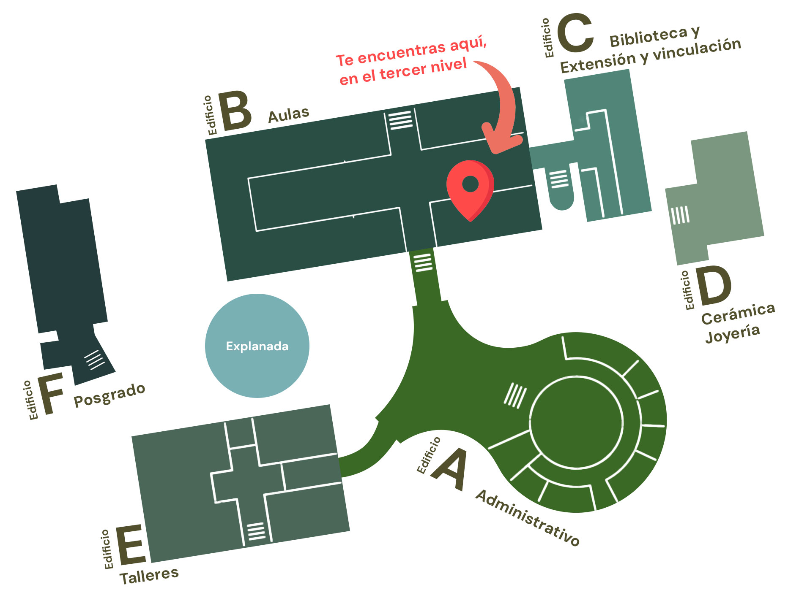
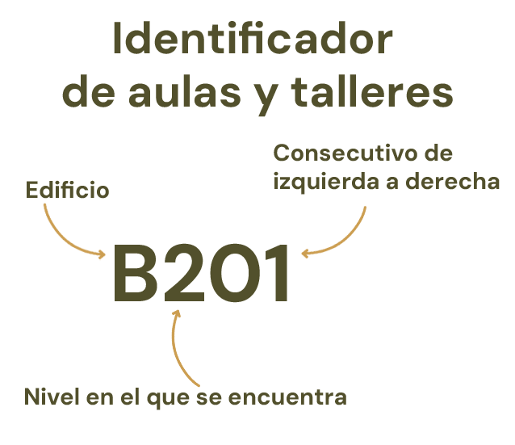

Desliza con el dedo hacia la derecha para explorar el mapa completo

Guía de Edificios y Niveles
Haz clic en cada nivel para conocer qué oficinas o aulas se encuentran ahí.
Edificio A (Administrativo)
Primer nivel (Planta baja)
- Exposala
- Baños
Segundo nivel
- Subdirección Administrativa
- Control Escolar
- Coordinación de la Licenciatura en Diseño Gráfico
- Coordinación de la Licenciatura en Diseño Industrial
- Coordinación de la Licenciatura en Arquitectura
- Coordinación de la Licenciatura en Administración y Promoción de la Obra Urbana
- Tutoría Académica
- Difusión Cultural
Edificio B (Aulas y talleres)
¿Cómo entender la nomenclatura de las aulas?
Todas las aulas y talleres de la FAD siguen un orden lógico para que no te pierdas:

Primer nivel (Planta baja)
- Dirección
- Subdirección Académica
- Movilidad estudiantil
- Aulas B107 a B111
- Sala de cómputo 1 PC (SC1-PC)
- Sala de cómputo 2 MAC (SC2-MAC)
- Sala de cómputo 3 MAC (SC3-MAC)
- Sala de cómputo 4 PC (SC4-PC)
- Sala de cómputo 5 PC (SC5-PC)
- Baños
Segundo nivel
- Aulas B201 a B209
- Aula Virtual
- Sala de titulación
- Consultorio médico
- Baños
Tercer nivel
- Aulas/Talleres B301 a B311
Cuarto nivel
- Aulas B401 a B412
- Kinder
Edificio C (Servicios escolares)
Primer nivel (Planta baja)
- Biblioteca
Segundo nivel
- Evaluación profesional
- Consultorio psicológico
- Sala de cómputo 6 PC (SC6-PC)
- Sala de cómputo 7 PC (SC7-PC)
Tercer nivel
- Autoacceso
- Coordinación de inglés
- Extensión y vinculación
- Servicio social
- Prácticas profesionales
- Becas
- Educación continua
Edificio D (Talleres especializados)
Primer nivel (Planta baja)
- Taller especializado en cerámica
Segundo nivel
- Taller especializado en joyería
Edificio E (Talleres especializados)
Primer nivel (Planta baja)
- Taller especializado en maderas
- Taller especializado en metales
- Taller especializado en soldadura
- Laboratorio de materiales
- Baños
Segundo nivel
- Taller especializado en fotografía
- Taller especializado en audio y video
- Taller especializado en textiles
- Sala de edición digital
- Sala de cómputo 8 PC (SC8-PC)
- Salón de dibujo
Tercer nivel
- Coordinación de talleres
- Taller especializado en serigrafía
- Taller especializado en grabado
- Taller especializado en plásticos
- Taller especializado en impresión 3D
- Taller especializado en Corte láser y CNC